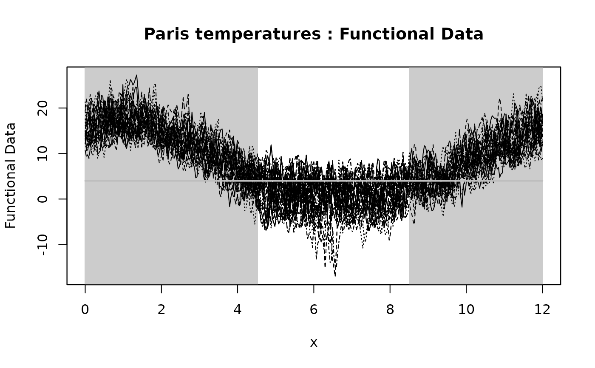
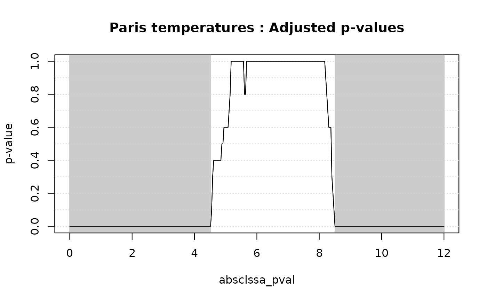
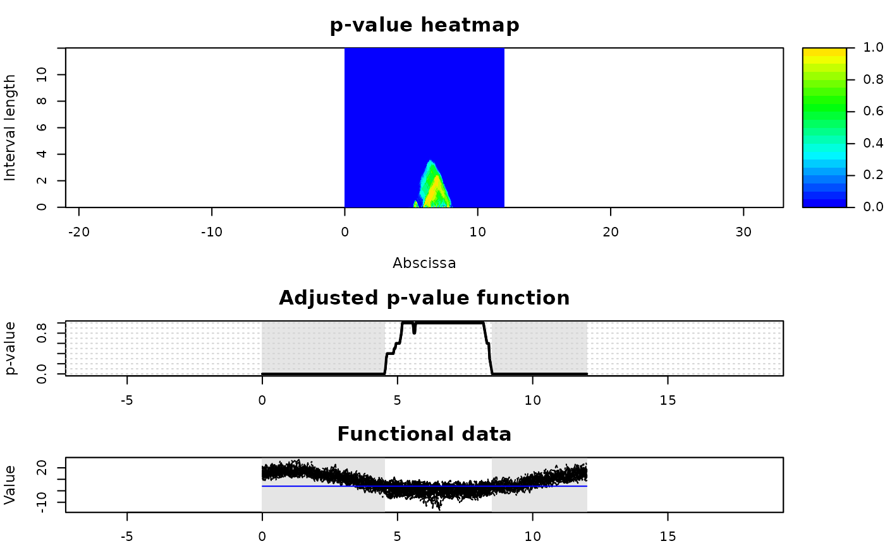

Plot method for IWT results on one-population test
plot.IWT1.Rdplot method for class "IWT1". Plotting function creating a
graphical output of the IWT for the test of the mean of one population:
functional data and IWT-adjusted p-values are plotted.
Arguments
- x
The object to be plotted. An object of class "
IWT1", usually, a result of a call toIWT1.- xrange
Range of the
xaxis.- alpha1
First level of significance used to select and display significant effects. Default is
alpha1 = 0.05.- alpha2
Second level of significance used to select and display significant effects. Default is
alpha1 = 0.01.alpha1andalpha2are s.t.alpha2 < alpha1. Otherwise the two values are switched.- ylab
Label of
yaxis of the plot of functional data. Default is "Functional Data".- main
Plot title.
- lwd
Line width for the plot of the adjusted p-value function. Default is
lwd=1.- col
Colors for the plot of functional data. Default is
col = 1.- ylim
Range of the
yaxis. Default isNULL, giving a plot with automatic range for functional data.- type
line type for the plot of the adjusted p-value function. Default is type='l'.
- ...
Additional plotting arguments that can be used with function
plot, such asgraphical parameters(seepar).
Value
No value returned. The function produces a graphical output of the
IWT results: the plot of the functional data and the one of the adjusted
p-values. The portions of the domain selected as significant by the test at
level alpha1 and alpha2 are highlighted in the plot of the
adjusted p-value function and in the one of functional data by gray areas
(light and dark gray, respectively).
References
Pini, A., & Vantini, S. (2017). Interval-wise testing for functional data. Journal of Nonparametric Statistics, 29(2), 407-424
Pini, A., Vantini, S., Colosimo, B. M., & Grasso, M. (2018). Domain‐selective functional analysis of variance for supervised statistical profile monitoring of signal data. Journal of the Royal Statistical Society: Series C (Applied Statistics) 67(1), 55-81.
Abramowicz, K., Hager, C. K., Pini, A., Schelin, L., Sjostedt de Luna, S., & Vantini, S. (2018). Nonparametric inference for functional‐on‐scalar linear models applied to knee kinematic hop data after injury of the anterior cruciate ligament. Scandinavian Journal of Statistics 45(4), 1036-1061.
See also
IWTimage for the plot of p-values heatmaps. See also
IWT2 to perform the ITP to test differences between two
populations. See ITP1bspline for one-population test based on
B-spline basis representation.
Examples
# Importing the NASA temperatures data set
data(NASAtemp)
# Performing the IWT for one population
IWT.result <- IWT1(NASAtemp$paris, mu = 4, B = 10L)
#> [1] "Point-wise tests"
#> [1] "Interval-wise tests"
#> [1] "creating the p-value matrix: end of row 2 out of 365"
#> [1] "creating the p-value matrix: end of row 3 out of 365"
#> [1] "creating the p-value matrix: end of row 4 out of 365"
#> [1] "creating the p-value matrix: end of row 5 out of 365"
#> [1] "creating the p-value matrix: end of row 6 out of 365"
#> [1] "creating the p-value matrix: end of row 7 out of 365"
#> [1] "creating the p-value matrix: end of row 8 out of 365"
#> [1] "creating the p-value matrix: end of row 9 out of 365"
#> [1] "creating the p-value matrix: end of row 10 out of 365"
#> [1] "creating the p-value matrix: end of row 11 out of 365"
#> [1] "creating the p-value matrix: end of row 12 out of 365"
#> [1] "creating the p-value matrix: end of row 13 out of 365"
#> [1] "creating the p-value matrix: end of row 14 out of 365"
#> [1] "creating the p-value matrix: end of row 15 out of 365"
#> [1] "creating the p-value matrix: end of row 16 out of 365"
#> [1] "creating the p-value matrix: end of row 17 out of 365"
#> [1] "creating the p-value matrix: end of row 18 out of 365"
#> [1] "creating the p-value matrix: end of row 19 out of 365"
#> [1] "creating the p-value matrix: end of row 20 out of 365"
#> [1] "creating the p-value matrix: end of row 21 out of 365"
#> [1] "creating the p-value matrix: end of row 22 out of 365"
#> [1] "creating the p-value matrix: end of row 23 out of 365"
#> [1] "creating the p-value matrix: end of row 24 out of 365"
#> [1] "creating the p-value matrix: end of row 25 out of 365"
#> [1] "creating the p-value matrix: end of row 26 out of 365"
#> [1] "creating the p-value matrix: end of row 27 out of 365"
#> [1] "creating the p-value matrix: end of row 28 out of 365"
#> [1] "creating the p-value matrix: end of row 29 out of 365"
#> [1] "creating the p-value matrix: end of row 30 out of 365"
#> [1] "creating the p-value matrix: end of row 31 out of 365"
#> [1] "creating the p-value matrix: end of row 32 out of 365"
#> [1] "creating the p-value matrix: end of row 33 out of 365"
#> [1] "creating the p-value matrix: end of row 34 out of 365"
#> [1] "creating the p-value matrix: end of row 35 out of 365"
#> [1] "creating the p-value matrix: end of row 36 out of 365"
#> [1] "creating the p-value matrix: end of row 37 out of 365"
#> [1] "creating the p-value matrix: end of row 38 out of 365"
#> [1] "creating the p-value matrix: end of row 39 out of 365"
#> [1] "creating the p-value matrix: end of row 40 out of 365"
#> [1] "creating the p-value matrix: end of row 41 out of 365"
#> [1] "creating the p-value matrix: end of row 42 out of 365"
#> [1] "creating the p-value matrix: end of row 43 out of 365"
#> [1] "creating the p-value matrix: end of row 44 out of 365"
#> [1] "creating the p-value matrix: end of row 45 out of 365"
#> [1] "creating the p-value matrix: end of row 46 out of 365"
#> [1] "creating the p-value matrix: end of row 47 out of 365"
#> [1] "creating the p-value matrix: end of row 48 out of 365"
#> [1] "creating the p-value matrix: end of row 49 out of 365"
#> [1] "creating the p-value matrix: end of row 50 out of 365"
#> [1] "creating the p-value matrix: end of row 51 out of 365"
#> [1] "creating the p-value matrix: end of row 52 out of 365"
#> [1] "creating the p-value matrix: end of row 53 out of 365"
#> [1] "creating the p-value matrix: end of row 54 out of 365"
#> [1] "creating the p-value matrix: end of row 55 out of 365"
#> [1] "creating the p-value matrix: end of row 56 out of 365"
#> [1] "creating the p-value matrix: end of row 57 out of 365"
#> [1] "creating the p-value matrix: end of row 58 out of 365"
#> [1] "creating the p-value matrix: end of row 59 out of 365"
#> [1] "creating the p-value matrix: end of row 60 out of 365"
#> [1] "creating the p-value matrix: end of row 61 out of 365"
#> [1] "creating the p-value matrix: end of row 62 out of 365"
#> [1] "creating the p-value matrix: end of row 63 out of 365"
#> [1] "creating the p-value matrix: end of row 64 out of 365"
#> [1] "creating the p-value matrix: end of row 65 out of 365"
#> [1] "creating the p-value matrix: end of row 66 out of 365"
#> [1] "creating the p-value matrix: end of row 67 out of 365"
#> [1] "creating the p-value matrix: end of row 68 out of 365"
#> [1] "creating the p-value matrix: end of row 69 out of 365"
#> [1] "creating the p-value matrix: end of row 70 out of 365"
#> [1] "creating the p-value matrix: end of row 71 out of 365"
#> [1] "creating the p-value matrix: end of row 72 out of 365"
#> [1] "creating the p-value matrix: end of row 73 out of 365"
#> [1] "creating the p-value matrix: end of row 74 out of 365"
#> [1] "creating the p-value matrix: end of row 75 out of 365"
#> [1] "creating the p-value matrix: end of row 76 out of 365"
#> [1] "creating the p-value matrix: end of row 77 out of 365"
#> [1] "creating the p-value matrix: end of row 78 out of 365"
#> [1] "creating the p-value matrix: end of row 79 out of 365"
#> [1] "creating the p-value matrix: end of row 80 out of 365"
#> [1] "creating the p-value matrix: end of row 81 out of 365"
#> [1] "creating the p-value matrix: end of row 82 out of 365"
#> [1] "creating the p-value matrix: end of row 83 out of 365"
#> [1] "creating the p-value matrix: end of row 84 out of 365"
#> [1] "creating the p-value matrix: end of row 85 out of 365"
#> [1] "creating the p-value matrix: end of row 86 out of 365"
#> [1] "creating the p-value matrix: end of row 87 out of 365"
#> [1] "creating the p-value matrix: end of row 88 out of 365"
#> [1] "creating the p-value matrix: end of row 89 out of 365"
#> [1] "creating the p-value matrix: end of row 90 out of 365"
#> [1] "creating the p-value matrix: end of row 91 out of 365"
#> [1] "creating the p-value matrix: end of row 92 out of 365"
#> [1] "creating the p-value matrix: end of row 93 out of 365"
#> [1] "creating the p-value matrix: end of row 94 out of 365"
#> [1] "creating the p-value matrix: end of row 95 out of 365"
#> [1] "creating the p-value matrix: end of row 96 out of 365"
#> [1] "creating the p-value matrix: end of row 97 out of 365"
#> [1] "creating the p-value matrix: end of row 98 out of 365"
#> [1] "creating the p-value matrix: end of row 99 out of 365"
#> [1] "creating the p-value matrix: end of row 100 out of 365"
#> [1] "creating the p-value matrix: end of row 101 out of 365"
#> [1] "creating the p-value matrix: end of row 102 out of 365"
#> [1] "creating the p-value matrix: end of row 103 out of 365"
#> [1] "creating the p-value matrix: end of row 104 out of 365"
#> [1] "creating the p-value matrix: end of row 105 out of 365"
#> [1] "creating the p-value matrix: end of row 106 out of 365"
#> [1] "creating the p-value matrix: end of row 107 out of 365"
#> [1] "creating the p-value matrix: end of row 108 out of 365"
#> [1] "creating the p-value matrix: end of row 109 out of 365"
#> [1] "creating the p-value matrix: end of row 110 out of 365"
#> [1] "creating the p-value matrix: end of row 111 out of 365"
#> [1] "creating the p-value matrix: end of row 112 out of 365"
#> [1] "creating the p-value matrix: end of row 113 out of 365"
#> [1] "creating the p-value matrix: end of row 114 out of 365"
#> [1] "creating the p-value matrix: end of row 115 out of 365"
#> [1] "creating the p-value matrix: end of row 116 out of 365"
#> [1] "creating the p-value matrix: end of row 117 out of 365"
#> [1] "creating the p-value matrix: end of row 118 out of 365"
#> [1] "creating the p-value matrix: end of row 119 out of 365"
#> [1] "creating the p-value matrix: end of row 120 out of 365"
#> [1] "creating the p-value matrix: end of row 121 out of 365"
#> [1] "creating the p-value matrix: end of row 122 out of 365"
#> [1] "creating the p-value matrix: end of row 123 out of 365"
#> [1] "creating the p-value matrix: end of row 124 out of 365"
#> [1] "creating the p-value matrix: end of row 125 out of 365"
#> [1] "creating the p-value matrix: end of row 126 out of 365"
#> [1] "creating the p-value matrix: end of row 127 out of 365"
#> [1] "creating the p-value matrix: end of row 128 out of 365"
#> [1] "creating the p-value matrix: end of row 129 out of 365"
#> [1] "creating the p-value matrix: end of row 130 out of 365"
#> [1] "creating the p-value matrix: end of row 131 out of 365"
#> [1] "creating the p-value matrix: end of row 132 out of 365"
#> [1] "creating the p-value matrix: end of row 133 out of 365"
#> [1] "creating the p-value matrix: end of row 134 out of 365"
#> [1] "creating the p-value matrix: end of row 135 out of 365"
#> [1] "creating the p-value matrix: end of row 136 out of 365"
#> [1] "creating the p-value matrix: end of row 137 out of 365"
#> [1] "creating the p-value matrix: end of row 138 out of 365"
#> [1] "creating the p-value matrix: end of row 139 out of 365"
#> [1] "creating the p-value matrix: end of row 140 out of 365"
#> [1] "creating the p-value matrix: end of row 141 out of 365"
#> [1] "creating the p-value matrix: end of row 142 out of 365"
#> [1] "creating the p-value matrix: end of row 143 out of 365"
#> [1] "creating the p-value matrix: end of row 144 out of 365"
#> [1] "creating the p-value matrix: end of row 145 out of 365"
#> [1] "creating the p-value matrix: end of row 146 out of 365"
#> [1] "creating the p-value matrix: end of row 147 out of 365"
#> [1] "creating the p-value matrix: end of row 148 out of 365"
#> [1] "creating the p-value matrix: end of row 149 out of 365"
#> [1] "creating the p-value matrix: end of row 150 out of 365"
#> [1] "creating the p-value matrix: end of row 151 out of 365"
#> [1] "creating the p-value matrix: end of row 152 out of 365"
#> [1] "creating the p-value matrix: end of row 153 out of 365"
#> [1] "creating the p-value matrix: end of row 154 out of 365"
#> [1] "creating the p-value matrix: end of row 155 out of 365"
#> [1] "creating the p-value matrix: end of row 156 out of 365"
#> [1] "creating the p-value matrix: end of row 157 out of 365"
#> [1] "creating the p-value matrix: end of row 158 out of 365"
#> [1] "creating the p-value matrix: end of row 159 out of 365"
#> [1] "creating the p-value matrix: end of row 160 out of 365"
#> [1] "creating the p-value matrix: end of row 161 out of 365"
#> [1] "creating the p-value matrix: end of row 162 out of 365"
#> [1] "creating the p-value matrix: end of row 163 out of 365"
#> [1] "creating the p-value matrix: end of row 164 out of 365"
#> [1] "creating the p-value matrix: end of row 165 out of 365"
#> [1] "creating the p-value matrix: end of row 166 out of 365"
#> [1] "creating the p-value matrix: end of row 167 out of 365"
#> [1] "creating the p-value matrix: end of row 168 out of 365"
#> [1] "creating the p-value matrix: end of row 169 out of 365"
#> [1] "creating the p-value matrix: end of row 170 out of 365"
#> [1] "creating the p-value matrix: end of row 171 out of 365"
#> [1] "creating the p-value matrix: end of row 172 out of 365"
#> [1] "creating the p-value matrix: end of row 173 out of 365"
#> [1] "creating the p-value matrix: end of row 174 out of 365"
#> [1] "creating the p-value matrix: end of row 175 out of 365"
#> [1] "creating the p-value matrix: end of row 176 out of 365"
#> [1] "creating the p-value matrix: end of row 177 out of 365"
#> [1] "creating the p-value matrix: end of row 178 out of 365"
#> [1] "creating the p-value matrix: end of row 179 out of 365"
#> [1] "creating the p-value matrix: end of row 180 out of 365"
#> [1] "creating the p-value matrix: end of row 181 out of 365"
#> [1] "creating the p-value matrix: end of row 182 out of 365"
#> [1] "creating the p-value matrix: end of row 183 out of 365"
#> [1] "creating the p-value matrix: end of row 184 out of 365"
#> [1] "creating the p-value matrix: end of row 185 out of 365"
#> [1] "creating the p-value matrix: end of row 186 out of 365"
#> [1] "creating the p-value matrix: end of row 187 out of 365"
#> [1] "creating the p-value matrix: end of row 188 out of 365"
#> [1] "creating the p-value matrix: end of row 189 out of 365"
#> [1] "creating the p-value matrix: end of row 190 out of 365"
#> [1] "creating the p-value matrix: end of row 191 out of 365"
#> [1] "creating the p-value matrix: end of row 192 out of 365"
#> [1] "creating the p-value matrix: end of row 193 out of 365"
#> [1] "creating the p-value matrix: end of row 194 out of 365"
#> [1] "creating the p-value matrix: end of row 195 out of 365"
#> [1] "creating the p-value matrix: end of row 196 out of 365"
#> [1] "creating the p-value matrix: end of row 197 out of 365"
#> [1] "creating the p-value matrix: end of row 198 out of 365"
#> [1] "creating the p-value matrix: end of row 199 out of 365"
#> [1] "creating the p-value matrix: end of row 200 out of 365"
#> [1] "creating the p-value matrix: end of row 201 out of 365"
#> [1] "creating the p-value matrix: end of row 202 out of 365"
#> [1] "creating the p-value matrix: end of row 203 out of 365"
#> [1] "creating the p-value matrix: end of row 204 out of 365"
#> [1] "creating the p-value matrix: end of row 205 out of 365"
#> [1] "creating the p-value matrix: end of row 206 out of 365"
#> [1] "creating the p-value matrix: end of row 207 out of 365"
#> [1] "creating the p-value matrix: end of row 208 out of 365"
#> [1] "creating the p-value matrix: end of row 209 out of 365"
#> [1] "creating the p-value matrix: end of row 210 out of 365"
#> [1] "creating the p-value matrix: end of row 211 out of 365"
#> [1] "creating the p-value matrix: end of row 212 out of 365"
#> [1] "creating the p-value matrix: end of row 213 out of 365"
#> [1] "creating the p-value matrix: end of row 214 out of 365"
#> [1] "creating the p-value matrix: end of row 215 out of 365"
#> [1] "creating the p-value matrix: end of row 216 out of 365"
#> [1] "creating the p-value matrix: end of row 217 out of 365"
#> [1] "creating the p-value matrix: end of row 218 out of 365"
#> [1] "creating the p-value matrix: end of row 219 out of 365"
#> [1] "creating the p-value matrix: end of row 220 out of 365"
#> [1] "creating the p-value matrix: end of row 221 out of 365"
#> [1] "creating the p-value matrix: end of row 222 out of 365"
#> [1] "creating the p-value matrix: end of row 223 out of 365"
#> [1] "creating the p-value matrix: end of row 224 out of 365"
#> [1] "creating the p-value matrix: end of row 225 out of 365"
#> [1] "creating the p-value matrix: end of row 226 out of 365"
#> [1] "creating the p-value matrix: end of row 227 out of 365"
#> [1] "creating the p-value matrix: end of row 228 out of 365"
#> [1] "creating the p-value matrix: end of row 229 out of 365"
#> [1] "creating the p-value matrix: end of row 230 out of 365"
#> [1] "creating the p-value matrix: end of row 231 out of 365"
#> [1] "creating the p-value matrix: end of row 232 out of 365"
#> [1] "creating the p-value matrix: end of row 233 out of 365"
#> [1] "creating the p-value matrix: end of row 234 out of 365"
#> [1] "creating the p-value matrix: end of row 235 out of 365"
#> [1] "creating the p-value matrix: end of row 236 out of 365"
#> [1] "creating the p-value matrix: end of row 237 out of 365"
#> [1] "creating the p-value matrix: end of row 238 out of 365"
#> [1] "creating the p-value matrix: end of row 239 out of 365"
#> [1] "creating the p-value matrix: end of row 240 out of 365"
#> [1] "creating the p-value matrix: end of row 241 out of 365"
#> [1] "creating the p-value matrix: end of row 242 out of 365"
#> [1] "creating the p-value matrix: end of row 243 out of 365"
#> [1] "creating the p-value matrix: end of row 244 out of 365"
#> [1] "creating the p-value matrix: end of row 245 out of 365"
#> [1] "creating the p-value matrix: end of row 246 out of 365"
#> [1] "creating the p-value matrix: end of row 247 out of 365"
#> [1] "creating the p-value matrix: end of row 248 out of 365"
#> [1] "creating the p-value matrix: end of row 249 out of 365"
#> [1] "creating the p-value matrix: end of row 250 out of 365"
#> [1] "creating the p-value matrix: end of row 251 out of 365"
#> [1] "creating the p-value matrix: end of row 252 out of 365"
#> [1] "creating the p-value matrix: end of row 253 out of 365"
#> [1] "creating the p-value matrix: end of row 254 out of 365"
#> [1] "creating the p-value matrix: end of row 255 out of 365"
#> [1] "creating the p-value matrix: end of row 256 out of 365"
#> [1] "creating the p-value matrix: end of row 257 out of 365"
#> [1] "creating the p-value matrix: end of row 258 out of 365"
#> [1] "creating the p-value matrix: end of row 259 out of 365"
#> [1] "creating the p-value matrix: end of row 260 out of 365"
#> [1] "creating the p-value matrix: end of row 261 out of 365"
#> [1] "creating the p-value matrix: end of row 262 out of 365"
#> [1] "creating the p-value matrix: end of row 263 out of 365"
#> [1] "creating the p-value matrix: end of row 264 out of 365"
#> [1] "creating the p-value matrix: end of row 265 out of 365"
#> [1] "creating the p-value matrix: end of row 266 out of 365"
#> [1] "creating the p-value matrix: end of row 267 out of 365"
#> [1] "creating the p-value matrix: end of row 268 out of 365"
#> [1] "creating the p-value matrix: end of row 269 out of 365"
#> [1] "creating the p-value matrix: end of row 270 out of 365"
#> [1] "creating the p-value matrix: end of row 271 out of 365"
#> [1] "creating the p-value matrix: end of row 272 out of 365"
#> [1] "creating the p-value matrix: end of row 273 out of 365"
#> [1] "creating the p-value matrix: end of row 274 out of 365"
#> [1] "creating the p-value matrix: end of row 275 out of 365"
#> [1] "creating the p-value matrix: end of row 276 out of 365"
#> [1] "creating the p-value matrix: end of row 277 out of 365"
#> [1] "creating the p-value matrix: end of row 278 out of 365"
#> [1] "creating the p-value matrix: end of row 279 out of 365"
#> [1] "creating the p-value matrix: end of row 280 out of 365"
#> [1] "creating the p-value matrix: end of row 281 out of 365"
#> [1] "creating the p-value matrix: end of row 282 out of 365"
#> [1] "creating the p-value matrix: end of row 283 out of 365"
#> [1] "creating the p-value matrix: end of row 284 out of 365"
#> [1] "creating the p-value matrix: end of row 285 out of 365"
#> [1] "creating the p-value matrix: end of row 286 out of 365"
#> [1] "creating the p-value matrix: end of row 287 out of 365"
#> [1] "creating the p-value matrix: end of row 288 out of 365"
#> [1] "creating the p-value matrix: end of row 289 out of 365"
#> [1] "creating the p-value matrix: end of row 290 out of 365"
#> [1] "creating the p-value matrix: end of row 291 out of 365"
#> [1] "creating the p-value matrix: end of row 292 out of 365"
#> [1] "creating the p-value matrix: end of row 293 out of 365"
#> [1] "creating the p-value matrix: end of row 294 out of 365"
#> [1] "creating the p-value matrix: end of row 295 out of 365"
#> [1] "creating the p-value matrix: end of row 296 out of 365"
#> [1] "creating the p-value matrix: end of row 297 out of 365"
#> [1] "creating the p-value matrix: end of row 298 out of 365"
#> [1] "creating the p-value matrix: end of row 299 out of 365"
#> [1] "creating the p-value matrix: end of row 300 out of 365"
#> [1] "creating the p-value matrix: end of row 301 out of 365"
#> [1] "creating the p-value matrix: end of row 302 out of 365"
#> [1] "creating the p-value matrix: end of row 303 out of 365"
#> [1] "creating the p-value matrix: end of row 304 out of 365"
#> [1] "creating the p-value matrix: end of row 305 out of 365"
#> [1] "creating the p-value matrix: end of row 306 out of 365"
#> [1] "creating the p-value matrix: end of row 307 out of 365"
#> [1] "creating the p-value matrix: end of row 308 out of 365"
#> [1] "creating the p-value matrix: end of row 309 out of 365"
#> [1] "creating the p-value matrix: end of row 310 out of 365"
#> [1] "creating the p-value matrix: end of row 311 out of 365"
#> [1] "creating the p-value matrix: end of row 312 out of 365"
#> [1] "creating the p-value matrix: end of row 313 out of 365"
#> [1] "creating the p-value matrix: end of row 314 out of 365"
#> [1] "creating the p-value matrix: end of row 315 out of 365"
#> [1] "creating the p-value matrix: end of row 316 out of 365"
#> [1] "creating the p-value matrix: end of row 317 out of 365"
#> [1] "creating the p-value matrix: end of row 318 out of 365"
#> [1] "creating the p-value matrix: end of row 319 out of 365"
#> [1] "creating the p-value matrix: end of row 320 out of 365"
#> [1] "creating the p-value matrix: end of row 321 out of 365"
#> [1] "creating the p-value matrix: end of row 322 out of 365"
#> [1] "creating the p-value matrix: end of row 323 out of 365"
#> [1] "creating the p-value matrix: end of row 324 out of 365"
#> [1] "creating the p-value matrix: end of row 325 out of 365"
#> [1] "creating the p-value matrix: end of row 326 out of 365"
#> [1] "creating the p-value matrix: end of row 327 out of 365"
#> [1] "creating the p-value matrix: end of row 328 out of 365"
#> [1] "creating the p-value matrix: end of row 329 out of 365"
#> [1] "creating the p-value matrix: end of row 330 out of 365"
#> [1] "creating the p-value matrix: end of row 331 out of 365"
#> [1] "creating the p-value matrix: end of row 332 out of 365"
#> [1] "creating the p-value matrix: end of row 333 out of 365"
#> [1] "creating the p-value matrix: end of row 334 out of 365"
#> [1] "creating the p-value matrix: end of row 335 out of 365"
#> [1] "creating the p-value matrix: end of row 336 out of 365"
#> [1] "creating the p-value matrix: end of row 337 out of 365"
#> [1] "creating the p-value matrix: end of row 338 out of 365"
#> [1] "creating the p-value matrix: end of row 339 out of 365"
#> [1] "creating the p-value matrix: end of row 340 out of 365"
#> [1] "creating the p-value matrix: end of row 341 out of 365"
#> [1] "creating the p-value matrix: end of row 342 out of 365"
#> [1] "creating the p-value matrix: end of row 343 out of 365"
#> [1] "creating the p-value matrix: end of row 344 out of 365"
#> [1] "creating the p-value matrix: end of row 345 out of 365"
#> [1] "creating the p-value matrix: end of row 346 out of 365"
#> [1] "creating the p-value matrix: end of row 347 out of 365"
#> [1] "creating the p-value matrix: end of row 348 out of 365"
#> [1] "creating the p-value matrix: end of row 349 out of 365"
#> [1] "creating the p-value matrix: end of row 350 out of 365"
#> [1] "creating the p-value matrix: end of row 351 out of 365"
#> [1] "creating the p-value matrix: end of row 352 out of 365"
#> [1] "creating the p-value matrix: end of row 353 out of 365"
#> [1] "creating the p-value matrix: end of row 354 out of 365"
#> [1] "creating the p-value matrix: end of row 355 out of 365"
#> [1] "creating the p-value matrix: end of row 356 out of 365"
#> [1] "creating the p-value matrix: end of row 357 out of 365"
#> [1] "creating the p-value matrix: end of row 358 out of 365"
#> [1] "creating the p-value matrix: end of row 359 out of 365"
#> [1] "creating the p-value matrix: end of row 360 out of 365"
#> [1] "creating the p-value matrix: end of row 361 out of 365"
#> [1] "creating the p-value matrix: end of row 362 out of 365"
#> [1] "creating the p-value matrix: end of row 363 out of 365"
#> [1] "creating the p-value matrix: end of row 364 out of 365"
#> [1] "creating the p-value matrix: end of row 365 out of 365"
#> [1] "Interval-Wise Testing completed"
# Plotting the results of the IWT
plot(IWT.result, xrange = c(0, 12), main = 'Paris temperatures')


# Plotting the p-value heatmap
IWTimage(IWT.result, abscissa_range = c(0, 12))

# Selecting the significant components at 5% level
which(IWT.result$adjusted_pval < 0.05)
#> [1] 1 2 3 4 5 6 7 8 9 10 11 12 13 14 15 16 17 18
#> [19] 19 20 21 22 23 24 25 26 27 28 29 30 31 32 33 34 35 36
#> [37] 37 38 39 40 41 42 43 44 45 46 47 48 49 50 51 52 53 54
#> [55] 55 56 57 58 59 60 61 62 63 64 65 66 67 68 69 70 71 72
#> [73] 73 74 75 76 77 78 79 80 81 82 83 84 85 86 87 88 89 90
#> [91] 91 92 93 94 95 96 97 98 99 100 101 102 103 104 105 106 107 108
#> [109] 109 110 111 112 113 114 115 116 117 118 119 120 121 122 123 124 125 126
#> [127] 127 128 129 130 131 132 133 134 135 136 137 138 259 260 261 262 263 264
#> [145] 265 266 267 268 269 270 271 272 273 274 275 276 277 278 279 280 281 282
#> [163] 283 284 285 286 287 288 289 290 291 292 293 294 295 296 297 298 299 300
#> [181] 301 302 303 304 305 306 307 308 309 310 311 312 313 314 315 316 317 318
#> [199] 319 320 321 322 323 324 325 326 327 328 329 330 331 332 333 334 335 336
#> [217] 337 338 339 340 341 342 343 344 345 346 347 348 349 350 351 352 353 354
#> [235] 355 356 357 358 359 360 361 362 363 364 365